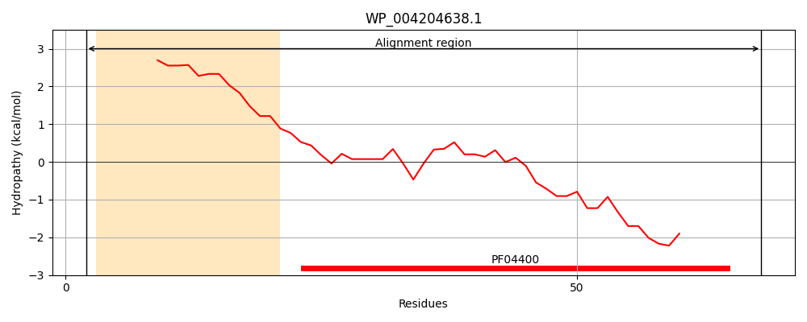
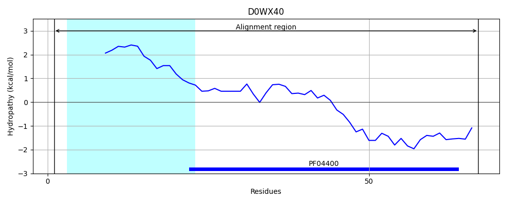
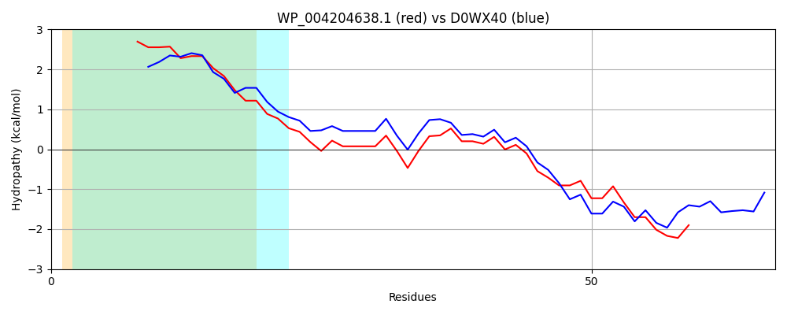

Hit Accession: D0WX40
Hit TCID: 3.D.5.1.1
Hit Description: gnl|BL_ORD_ID|2977 gnl|TC-DB|D0WX40|3.D.5.1.1 Uncharacterized protein OS=Vibrio alginolyticus 40B GN=VMC_17400 PE=4 SV=1
Mach Len: 67
e:0.000000
Query TMS Count : 1
Hit TMS Count: 1
TMS-Overlap Score: 0.900000
Predicted Substrates:CHEBI:9175;sodium(1+)
BLAST Alignment:
| Protein Hydropathy Plots: | |
|---|---|
|  |  |
Pairwise Alignment-Hydropathy Plot: | |
|  | |